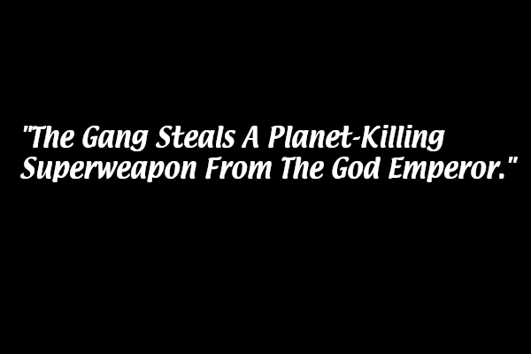
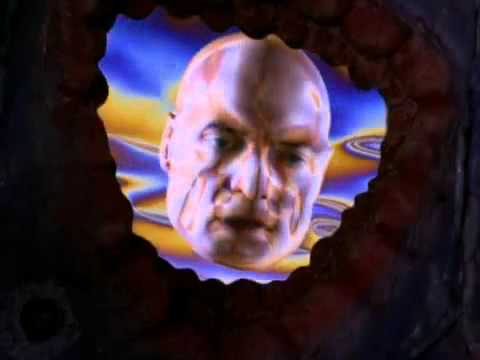

[A content warning before we begin - due to its grimdark nature, several episodes of this show contain themes of sexual violence. If that is not something you want to deal with, you may want to skip this one. Viewer discretion is advised. This show does not pull any punches.]
I honestly don't know how this is getting written before the Dark City essay I was working on. But seeing as how I am completely at the mercy of my ADHD hyperfocus, it's happening whether I wanted it to or not. So here goes.
Lexx was a show I watched between 2000-2001 on the Sci Fi channel (way before it was renamed to Syfy.) And from the beginning, I wasn't quite sure I liked it. But I watched it religiously for months, though at the time I really couldn't have told you why. I was also a regular visitor to fan websites like Sadgeezer's Guide. Because apparently, a huge part of the fandom experience on the early Web 1.0 Internet for a lot of people was reading Episode Guides for TV shows we were all actively watching for some reason. I don't know why this is, but we all did it.
(Actually, it was probably because this was before most people had high-speed internet, and before streaming. If you wanted to experience an episode again and you hadn't recorded it, Episode Guides were all you had for a while. Also, because this was before streaming and these shows were on TV, you couldn't just binge a show from the beginning back then. So if you came into the series in the middle of its run, Episode Guides were a way to get caught up. The writers of these online Episode Guides were also fans, and their takes on an episode could provide interesting context, or fill in details that a viewer may have missed on their initial viewing.)
LEXX was a show that couldn't seem to decide what it wanted to be: softcore porn, raunchy comedy, or bleak sci-fi dystopia. Most of my friends avoided the show, or said it was "too weird" for them. It either wasn't the standard sci-fi adventure show they wanted it to be, or it wasn't the sci-fi softcore porn show they wanted it to be, or they didn't get the humor. It was like we collectively couldn't wrap our heads around the idea of a storyline which cohesively contained all of these elements yet, even though we'd all seen the animated flm Heavy Metal multiple times by then.
I heard it frequently dubbed "The Rocky Horror Picture Show IN SPACE." which was no doubt helped along by the presence of Tim Curry and Barry Bostwick ("Brad!") in the episodes in which they appeared. It sometimes reminded me of Red Dwarf - a show which was universally beloved amongst my peer group, which we quoted constantly. But Red Dwarf was not this weird. And even though it had its moments, it was nowhere this dark. A good comparison I've heard more recently "Warhammer 40K meets Barbarella meets Mad Max meets Heavy Metal." (One friend of mine recently referred to it as "Warhammer Horny K.") And that seems about right.
I was already used to grimdark narratives in books, both fantasy and science fiction. I was already fan of Michael Moorcock by this point, and Elric of Melnibone and Dorian Hawkmoon were already old friends by the time I was first tuning in to LEXX. But LEXX was way more grimdark than anything else I was used to from a TV show, during a 1990s Sci Fi TV landscape dominated by Star Trek and Babylon 5. Most of the typical TV fare at the time was your traditionally heroic, good-versus-evil, heroes' journey-type narratives. And LEXX was decidedly NOT that.
If you had asked me back then, I couldn't have articulated what it was that made me tune in every week. In fact, there were times when I wondered if I was actually watching the show if I liked it, or if it was because I couldn't look away. But something about it kept me watching, right up until a certain morning in September 2001; after which I really couldn't handle anything that grim or dark at all anymore for a good long while. But even after I walked away from it, the Lexx Escape Theme would still pop into my head at odd moments. Or I'd remember the words to the Brunnen G Battle Hymn, long after the show had ended. Maybe I was done with LEXX at that time, but it clearly wasn't done with me.
But having revisited it recently, and with the benefit of about 24 years hindsight, I'd say that it was grimdark to the point of black comedy: and that was the whole point. It was bleakness to the point of High Camp. It brought a kind of fatalism and nihilsm to the table that we probably wouldn't see again until Black Mirror, or the first season of True Detective; with a similar theme of time being a flat circle, of time cycling and repeating. Or as the Time Prophet said, "This has happened before, and it will happen again."
I've been revisiting the series and its themes in the context of current events. And on a surface level, to continue the Warhammer 40K analogy, the whole series could be summed up as "Yeah, this is pretty much what would happen if these specific people stole a planet-killing superweapon from the God Emperor, and escaped with it."
Because that is the plot, in a nutshell: our protagonists (so to speak) steal a planet-killing spaceship, and ride it around between two universes (the Light Universe and the Dark Zone) like they stole it. They don't immediately turn it against The Empire (aside from one security base that got in their way) and they don't collaborate with The Resistance. They basically just wander around in search of some kind of safe permenant refuge, and physical gratification - and not even in that order.
I know that this was very likely not the showrunners' intent; but beneath the atonal, seemingly dissonant silliness and weirdness juxataposed with themes of futility and horror, I feel like the show was screaming a warning that we collectively needed to hear at that exact moment in time at the dawn of the 21st century. One that my subconscious mind maybe picked up on, but my conscious mind wouldn't understand until years later. I think LEXX was way more prescient than anyone knew at the time. The show feels like a biting, satirical parody of the place we're at right now, reminicent of Terry Gilliam's film Brazil. I also think it has a lot in common with the Star Wars series Andor - but if anything it's even closer to our current reality. Just like our current events, aspects of the show may well seem silly and nonsensical and surreal: until the true horror of what's actually happening, and what it actually means, hits you.
Because when the science fiction dystopia arrives, it might not take the form of an orderly row of immaculate Star Wars-issue Stormtroopers, or a fleet of battle droids or TIE Fighters. It might look like a bored functionary who is sentencing you to grevious bodily harm just because it's their job, completely indifferent to and disconnected from the toll of human suffering: because hey, they're just a working stiff trying to make a living and they're just following the rules. It might look like the AI that our systems are quickly coming to rely on as it glitches out and malfunctions, creating havoc. It might look like a religious fanatic in a position of authority, who is comfortable and secure in their belief that imprisoning, torturing, and killing you and everyone you love is the necessary, moral, righteous thing to do - because His Divine Shadow wills it. It might look like brutally disproportionate military retribution brought against a people who did nothing to deserve it and are helpless to fight back, while the rest of the world either cheers it on, or shrugs and looks away - either because they are transfixed by mindless, superficial distractions, or because they feel powerless to do anything about it. And besides, they have work in the morning.
And this is just the first episode.
The series could be seen as an exploration of what people do and what they become when attempting to functon within corrupt, decaying, and dysfunctional social structures, and what happens to them after those systems start to fall apart. This is what The Prophesy can be seen as a metaphor for: systems like this are doomed to fail, and they usually fail and fall apart for similar reasons. We don't need a Time Prophet to tell us that: it's the most predictable thing in the universe.
"This has happened before, and it will happen again."
But sometimes, that downfall is helped along. The people working to speed along its demise might be doing so for a chance to build a better future out of the ashes; but more often than not, they just want to watch the universe burn. This is what Accelerationism looks like.
And when it does happen; when we are facing futility and entropy and the meaningless of existence, and the inevitable collapse or destruction of an entire empire, an entire planet, or an entire universe; when nothing we do seems to matter; then paradoxically, all that matters is what we do. Whether that's taking to our battleships and singing our battle-hymns as we fly to our doom, or frantically searching for the nearest space-brothel: either in defiance or avoidance of the inevitable.